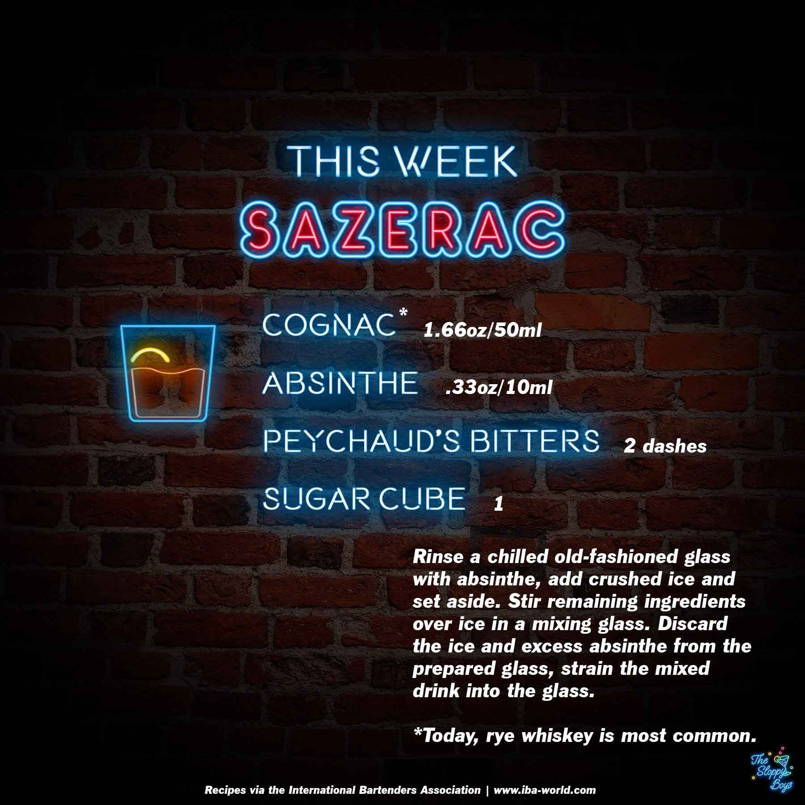

Sazerac
Ingredients
- Cognac* (1.66oz/50ml)
- Absinthe (.33oz/10ml)
- Peychaud's Bitters (2 dashes)
- Sugar Cube (1)
Steps
- Rinse a chilled old-fashioned glass with absinthe, add crushed ice and set aside.
- Stir remaining ingredients over ice in a mixing glass.
- Discard the ice and excess absinthe from the prepared glass, strain the mixed drink into the glass.
Notes